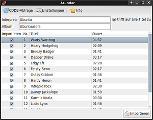
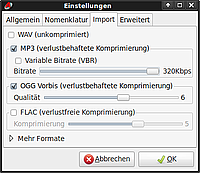

Asunder
Dieser Artikel wurde für die folgenden Ubuntu-Versionen getestet:
Ubuntu 16.04 Xenial Xerus
Ubuntu 14.04 Trusty Tahr
Zum Verständnis dieses Artikels sind folgende Seiten hilfreich:
Asunder  ist ein auf der Grafikbibliothek GTK+ basierendes Programm zum Auslesen ("rippen") und Umwandeln von Audio-CDs in ein anderes Format. Als Formate unterstützt das Programm WAV, MP3, OGG-Vorbis, FLAC, OGG-Opus und Wavpack. Über die Internetdatenbank Freedb ruft das Programm Titelinformationen zur eingelegten CD ab. Auslesen, simultanes Kodieren in verschiedene Audio-Formaten und Erstellen von Wiedergabelisten (M3U) sind schnell und einfach möglich.
ist ein auf der Grafikbibliothek GTK+ basierendes Programm zum Auslesen ("rippen") und Umwandeln von Audio-CDs in ein anderes Format. Als Formate unterstützt das Programm WAV, MP3, OGG-Vorbis, FLAC, OGG-Opus und Wavpack. Über die Internetdatenbank Freedb ruft das Programm Titelinformationen zur eingelegten CD ab. Auslesen, simultanes Kodieren in verschiedene Audio-Formaten und Erstellen von Wiedergabelisten (M3U) sind schnell und einfach möglich.
Installation¶
 Zur Installation [1] ist neben dem Basisprogramm
asunder (universe)
 mit apturl
mit apturl
Paketliste zum Kopieren:
sudo apt-get install asunder
sudo aptitude install asunder
noch der gewünschte Codec zu installieren. Man kann aber auch alle unterstützten Codecs auf einmal installieren:
lame (universe, MP3)
vorbis-tools (universe ab 16.04, OGG-Vorbis)
flac (universe ab 16.04)
libopus0 (OGG-Opus ab 14.04)
wavpack (universe)
mit apturl
Paketliste zum Kopieren:
sudo apt-get install lame vorbis-tools flac libopus0 wavpack
sudo aptitude install lame vorbis-tools flac libopus0 wavpack
Nach erfolgreicher Installation ist das Programm bei Ubuntu-Varianten mit einem Anwendungsmenü unter "Multimedia -> Asunder" zu finden.
Konfiguration¶
|  |
| Audio-Formate |
Über "Einstellungen" können folgende Grundeinstellungen vorgenommen werden:
"Allgemein" - Zielordner und Laufwerk festlegen, Anlegen von Wiedergabeliste (de)aktivieren
"Nomenklatur" - Aufbau der Datei- und Ordnerstruktur anpassen
"Import" - Wahl des Kodierformats / der Kodierformate und der Qualitätsstufen
"Erweitert" - Interneteinstellungen
Diese Einstellungen werden in der Datei ~/.asunder hinterlegt.
Bedienung¶
Nach dem Einlegen der Audio-CD kann über "CDDB-Abfrage" die Datenbank abgefragt werden. Alle verfügbaren Informationen kann man nachträglich verändern. Sofern eine CD nicht verfügbar sein sollte, müssen die Daten von Hand eingegeben werden. Über "Importieren" wird die CD in das gewünschte Format / die gewünschten Formate ausgelesen.
 Übersichtsartikel
Übersichtsartikel- Erstellt mit Inyoka
-
 2004 – 2017 ubuntuusers.de • Einige Rechte vorbehalten
2004 – 2017 ubuntuusers.de • Einige Rechte vorbehalten
Lizenz • Kontakt • Datenschutz • Impressum • Serverstatus -
Serverhousing gespendet von